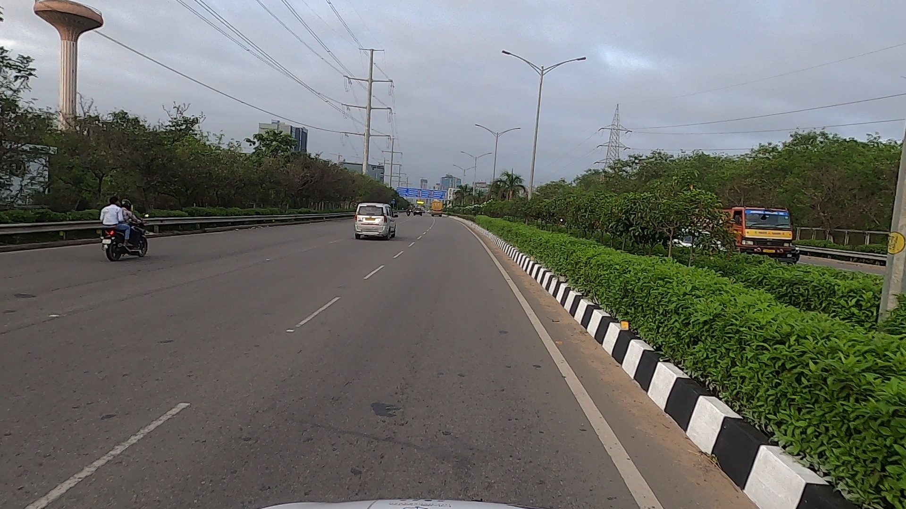
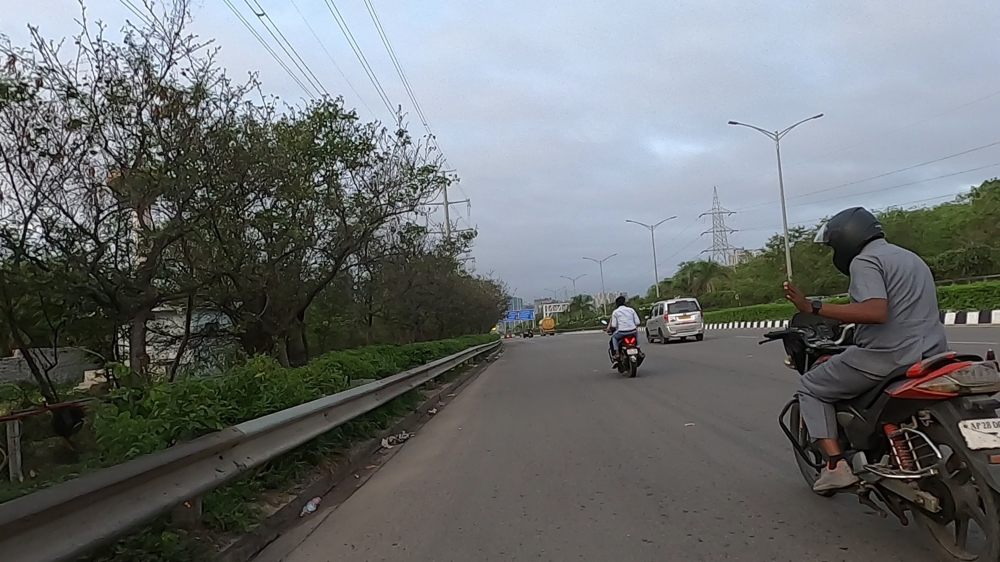
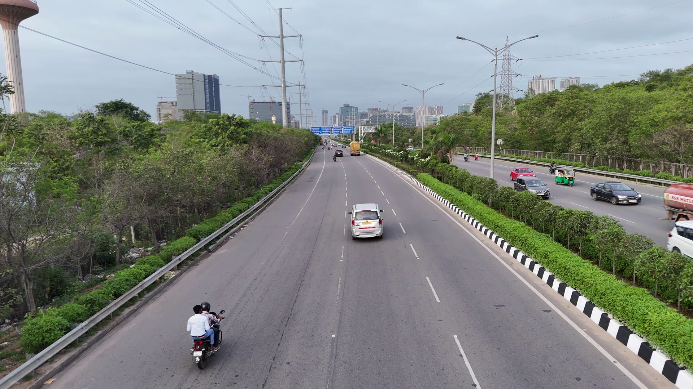

01
Viewpoint gap hurts NVS
Performance consistently drops as the test viewpoint moves away from the training trajectory, especially from TC→C to TC→S.
A real-world benchmark for evaluating novel view synthesis under large viewpoint changes in dynamic driving scenes. MV2 records the same outdoor scene from a car, a two-wheeler, and a drone, enabling train-on-one-platform and test-on-another evaluation.
Centre for Visual Information Technology, IIIT Hyderabad
Synchronized frame triplets from the same timestamp across the car, two-wheeler, and drone capture platforms.



Most driving NVS benchmarks test interpolation along the same vehicle trajectory. MV2 instead measures cross-platform extrapolation: train on one moving platform and render from another.
A car, a two-wheeler, and a drone observe the same dynamic outdoor scene from independent synchronized trajectories.
Models are trained on one platform and evaluated on another, exposing failures hidden by same-trajectory test splits.
COLMAP poses are filtered with manual region annotations, dense RoMA correspondences, and epipolar consistency checks.
A short version of the capture and filtering protocol used in the paper.
GoPro 10 cameras mounted on a car, two-wheeler, and drone capture synchronized 1080×1920 videos at 60 FPS.
Videos are sampled at 2 FPS and split into 100-frame segments. Congested, tunnel, red-light, and poorly aligned segments are removed.
Training sequences are reconstructed with COLMAP. Test images are localized using the nearest training images.
Relative poses are accepted only when the maximum epipolar error over annotated correspondences is at most 30 pixels.
A split name TX→Y means the model is trained on platform X and rendered/evaluated from platform Y.
The page keeps only the main conclusions needed for a project website.
Performance consistently drops as the test viewpoint moves away from the training trajectory, especially from TC→C to TC→S.
TC→L introduces only a small baseline. TC→S is the more realistic cross-vehicle test.
Training on drone images and rendering ground views causes a large degradation for both static and dynamic NVS methods.
Feed-forward pose estimators trail COLMAP under wide-baseline cross-platform localization.
Interactive table using the paper's main NVS results. Use tabs to switch training platforms; PSNR/SSIM higher is better and LPIPS lower is better.
Table values are copied from the main paper. Feed-forward methods use 12 context views; 2-view and 6-view ablations can be added later if needed.
Keep this block as a placeholder until the hosted viewer or video demo is ready.
Hosted interactive viewer link: https://example.com/mv2-viewer
Dataset, code, and paper entry points for the MV2 release.
Train/test lists, calibrated images, camera poses, and correspondence annotations for the benchmark release.
Dataset linkEvaluation scripts, split readers, metric computation, and baseline configuration files.
GitHub repo